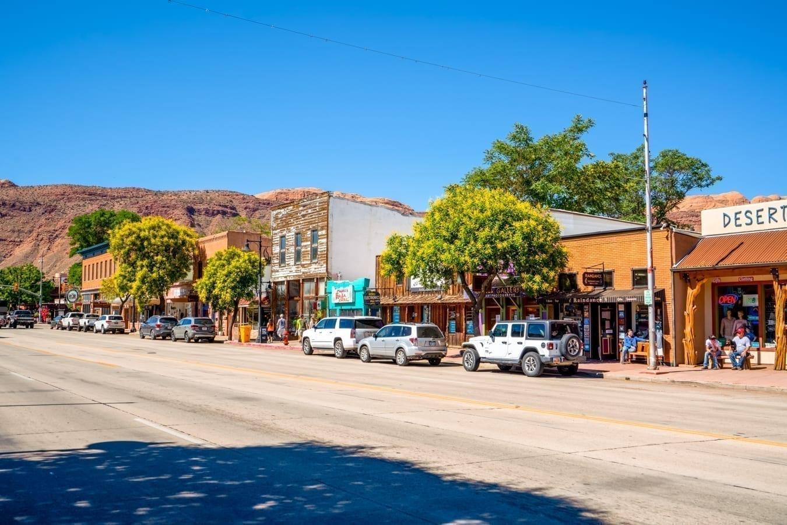
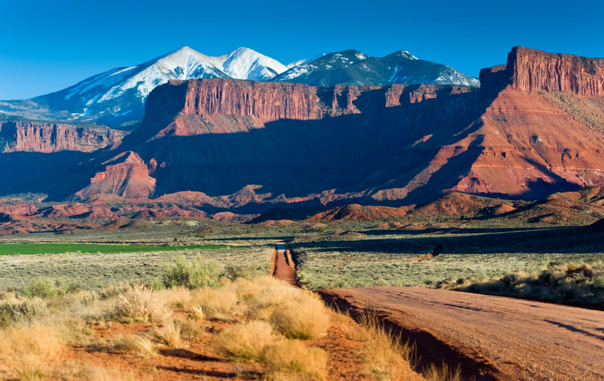

Moab is located in southeastern Utah and is surrounded by some of the most recognizable red rock landscapes in the United States. The area attracts visitors from around the world because of its scenery and outdoor activities.
Two of the area's most well-known destinations are Arches National Park and Canyonlands National Park. Moab is also popular for mountain biking, four-wheel driving, hiking, rafting, and camping.

Canyonlands National Park is located near Moab and features deep canyons, mesas, buttes, and expansive desert views.
Visit the Utah State University website to learn more about USU.
© 2026 Moab, Utah Website